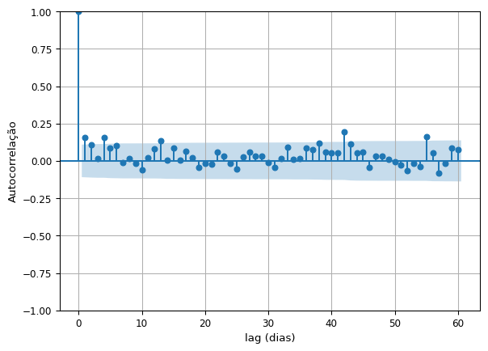

import pandas as pd
import os
import geopandas as gpd
import plotly.express as px
from statsmodels.graphics.tsaplots import plot_acf
import matplotlib.pyplot as pltExercício 01
Tópicos Avançados em Modelagem Ambiental - CAP INPE
1 Introdução
O presente relatório apresenta uma breve análise descritiva de uma série histórica de precipitação na cidade de São Paulo. A análise foi elaborada com auxílio das seguintes bibliotécas:
2 Dados
2.1 Coleta
Os dados utilizados foram coletados do Mapa Interativo da Rede Observacional para Monitoramento de Risco de Desastres Naturais do Cemaden. Foram extraídos os dados de estações pluviométricas da cidade de São Paulo, considerando o período entre 07/2024 e 06/2025.
data_folder = "../data/"
file_list = os.listdir(data_folder)
path_list = [data_folder + file for file in file_list]
df_list = [pd.read_csv(file, sep=";") for file in path_list]
df_precipitacao = pd.concat(df_list)
df_precipitacao.head()| municipio | codEstacao | uf | nomeEstacao | latitude | longitude | datahora | valorMedida | |
|---|---|---|---|---|---|---|---|---|
| 0 | SÃO PAULO | 355030801A | SP | Jardim Paulistano | -23,582 | -46,751 | 2024-07-01 00:20:00.0 | 0,00 |
| 1 | SÃO PAULO | 355030801A | SP | Jardim Paulistano | -23,582 | -46,751 | 2024-07-01 01:20:00.0 | 0,00 |
| 2 | SÃO PAULO | 355030801A | SP | Jardim Paulistano | -23,582 | -46,751 | 2024-07-01 02:20:00.0 | 0,00 |
| 3 | SÃO PAULO | 355030801A | SP | Jardim Paulistano | -23,582 | -46,751 | 2024-07-01 03:20:00.0 | 0,00 |
| 4 | SÃO PAULO | 355030801A | SP | Jardim Paulistano | -23,582 | -46,751 | 2024-07-01 04:20:00.0 | 0,00 |
2.2 Tratamento
Primeiro foi investigada a quantidade de estações em São Paulo.
estacoes = df_precipitacao.nomeEstacao.unique().sizeForam identificadas 74 estações pluviométricas na cidade. Decidiu-se por focar a análise dos dados coletados pela estação “Centro”.
df_local_estacoes = df_precipitacao.drop_duplicates(subset="nomeEstacao")
df_local_estacoes.latitude = pd.to_numeric(
df_local_estacoes.latitude.str.replace(",", ".")
)
df_local_estacoes.longitude = pd.to_numeric(
df_local_estacoes.longitude.str.replace(",", ".")
)
estacoes = gpd.GeoDataFrame(
df_local_estacoes,
geometry=gpd.points_from_xy(
df_local_estacoes.longitude,
df_local_estacoes.latitude
),
crs="EPSG:4326"
)
estacoes[["nomeEstacao", "geometry"]].explore(tiles="CartoDB positron")Make this Notebook Trusted to load map: File -> Trust Notebook
Em seguida, o atributo “datahora” foi dividido em duas colunas distintas, possibilitando o cálculo da precipitação acumulada por dia. Originalmente, o registro dos dados foi realizado em uma frequência horária quando o valor da precipitação foi 0.00 mm e em momentos de precipitação acima de 0, observou-se que o registro foi realizado em uma frequência de 10 minutos.
df_precipitacao[["data", "hora"]] = df_precipitacao.datahora.str.split(" ", expand=True)
df_precipitacao.valorMedida = pd.to_numeric(
df_precipitacao.valorMedida.str.replace(",", ".")
)
df_diario = (
df_precipitacao[df_precipitacao.nomeEstacao == "Centro "]
.groupby("data")
.agg(acumulado=("valorMedida", "sum"))
.reset_index()
)
df_diario.data = pd.to_datetime(df_diario.data)
df_diario.head(n=10)| data | acumulado | |
|---|---|---|
| 0 | 2024-07-01 | 0.00 |
| 1 | 2024-07-02 | 0.00 |
| 2 | 2024-07-03 | 0.00 |
| 3 | 2024-07-04 | 0.00 |
| 4 | 2024-07-05 | 0.00 |
| 5 | 2024-07-06 | 0.00 |
| 6 | 2024-07-07 | 0.00 |
| 7 | 2024-07-08 | 1.39 |
| 8 | 2024-07-09 | 31.70 |
| 9 | 2024-07-10 | 13.57 |
3 Análise exploratória
3.1 Série temporal
A Figura 1 apresenta a série temporal diária dos dados. O primeiro ponto de atenção é a falta de dados em alguns períodos. Foi observada a falta de registros nos períodos entre 2024-07-29 e 2024-08-09, 2024-08-10 e 2024-08-24, e 2024-11-13 e 2024-11-29. As datas de 2024-12-21, 2025-02-01 e 2025-02-18 destacam-se pelos maiores valores de precipitação acumulada, com valores de 77.67 mm, 85.72 mm e 53.87 mm, respectivamente.
px.line(
df_diario,
x="data",
y="acumulado",
labels={"data": "", "acumulado": "Precipitação (mm)"}
)3.2 Distribuição
A seguir foram extraídas algumas estatísticas descritivas com base nos dados diários. Grande parte dos dias não apresentaram dados de precipitação, visto que a mediana também apresentou um valor de 0.00 mm.
min = min(df_diario.acumulado)
max = max(df_diario.acumulado)
mean = df_diario.acumulado.mean()
median = df_diario.acumulado.median()
std = df_diario.acumulado.std()- Mínima: 0.00 mm
- Máxima: 85.72 mm
- Média 4.34 mm
- Mediana 0.00 mm
- Desvio padrão: 10.83 mm
A Figura 2 apresenta a distribuição desses valores, trazendo uma referência visual para os resultados apresentados anteriormente.
(
px.histogram(
df_diario,
x="acumulado",
log_y=True,
labels={"acumulado": "Precipitação acumulada (mm)"}
)
.update_traces(marker_line_color="white", marker_line_width=1)
)A Figura 3 apresenta a distribuição da precipitação diária agrupada por mês. fevereiro de 2025 apresentou a maior máxima (85.72 mm) e o maior q3 (9.96 mm). Novembro de 2024 foi o mês com a maior mediana (2.27 mm).
df_diario["mes"] = df_diario.data.dt.strftime('%Y-%m')
px.box(
df_diario,
x="mes",
y="acumulado",
labels={"mes": "", "acumulado": "Precipitação (mm)"}
)4 Autocorrelação
Por fim, a Figura 4 apresenta uma breve análise de autocorrelação da série diária, com lags de até 60 dias. Os lags de 1, 4, 13, 42, 55 se destacam por apresentarem valores de autocorrelação acima de 0.10.
fig, ax = plt.subplots()
plot_acf(df_diario.acumulado, title="", ax=ax, lags=60)
ax.tick_params(labelsize=9)
ax.set_xlabel("lag (dias)")
ax.set_ylabel("Autocorrelação")
ax.grid(True)
plt.show()
